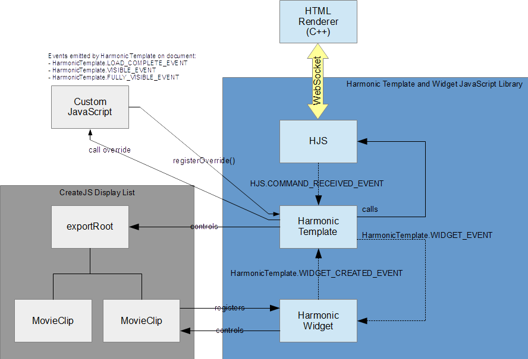

Harmonic Template and Widget JavaScript Library
This JavaScript library, provided by Harmonic, contains all of the code necessary to allow a HTML template to be used in the graphics processing and controlled by Oxtel. The code is composed of the following main components:
- HJS - provides the interface to and from the HTML renderer
- Harmonic Template - controls the main timeline and manages the widgets
- Harmonic Widgets - provides common functionality used by many of the template
- Harmonic FontFace - provides a mechanism for loading fonts from the webserver
- Harmonic Socket - provides a mechanism to allow JavaScript to interact with sockets
HJS
HJS (Harmonic JavaScript) provides the interface to the C++ HTML renderer. It uses a WebSocket to communicate to the renderer. The HTML renderer provides access to/from d-bus for template control as well as access to the shared surface. HJS also provides a mechanism to log messages to the Monitor log.
The HJS contains a global object called 'hjstest' that provides a valuable means to test template functionality in the desktop environment. This object allows the user to inject commands into the template just as if it was received over the websocket from the HTML renderer. This can be very useful when debugging run-time issues.
Harmonic Template
The Harmonic Template is the main controller for HTML templates. The Harmonic Template directs its animation controls at the Adobe exportRoot global object. It also controls all createjs MovieClips on the display tree.
The Harmonic Template is responsible for receiving template control commands from HJS via the HJS.COMMAND_RECEIVED_EVENT. It also manages widgets that are created during load time. Commands that are received from HJS and targeted at a widget are sent directly to the widget with the WIDGET_EVENT.
Harmonic Widgets
Harmonic Widgets make it easy for customers to integrate standard functionality into their templates. The Harmonic Widgets can be included into their Adobe Animate CC project by importing the library from the Harmonic Template Widget Library. The widgets in this library register themselves with the Harmonic Widget JavaScript code which provides the core functionality. The Harmonic Widgets register themselves with the Harmonic Template by dispatching the WIDGET_CREATED_EVENT. Once the Harmonic Template receives the event, it keeps track of the created widgets and sends the WIDGET_EVENT to the widget when the widget needs to take action.
Harmonic FontFace
The Harmonic FontFace is a thin wrapper around the CSS Font Loading API. It is intended to make it easy for customers to include fonts that reside near the Harmonic Template on the webserver.
Harmonic Socket
The Harmonic Socket is a mechanism that allows JavaScript to connect to TCP or UDP sockets using the HTML renderer as a proxy. Since browsers cannot open sockets directly due to security concerns, the HTML renderer will handle the socket connection and communication.
Design

Common Code Snippets
Below are a set of common code snippets. These snippets can also be found throughout the documentation, but have been duplicated here for convenience.
Callbacks on Harmonic Template Events
document.addEventListener(HarmonicTemplate.LOAD_COMPLETE_EVENT, onLoadComplete.bind(this));
function onLoadComplete(obj) {
hjs.info("LOAD_COMPLETE_EVENT received");
}
document.addEventListener(HarmonicTemplate.VISIBLE_EVENT, onVisible.bind(this));
function onVisible(obj) {
hjs.info("VISIBLE_EVENT received");
}
document.addEventListener(HarmonicTemplate.FULLY_VISIBLE_EVENT, onFullyVisible.bind(this));
function onFullyVisible(obj) {
hjs.info("FULLY_VISIBLE_EVENT received");
}
Overriding updateTextField
function updateTextFieldOverride(obj) {
hjs.info("updateTextFieldOverride:");
hjs.info("obj.tickid: " + obj.tickid);
hjs.info("obj.fieldNum: " + obj.fieldNum);
hjs.info("obj.text: " + obj.text);
hjs.info("obj.render: " + obj.render);
switch (obj.fieldNum) {
case 1:
break;
}
// This is optional, but recommended.
harmonicTemplate.updateTextField(obj);
}
// Create the override object and register it with the harmonicTemplate
let override = {
updateTextField: updateTextFieldOverride
}
harmonicTemplate.registerOverride(override);
Loading a font
let roboto = new HarmonicFontFace("Roboto Black", "Roboto-Black.woff2");
roboto.load();